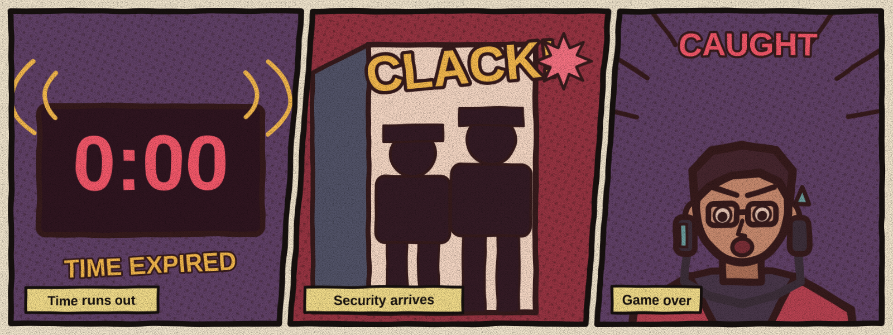

Endings
The game has four endings. Without the special discovery, escaping leads to one of two escape endings, based on time and mistakes. Letting the countdown reach zero leads to capture. The fourth ending requires exploring beyond the main route and escaping. Which endings can you reach?
Requirements
| Ending | How to reach it | Difficulty |
|---|---|---|
| Perfect Escape | Open the lock with at least two minutes remaining and no more than one mistake. | High |
| Escape with Consequences | Open the lock with less than two minutes remaining or more than one mistake. | Medium |
| Caught | Let the countdown reach zero. | Low |
| Secret | ??? | Very high |
The endings in comics



Secret Ending: ??? THE END
Summaries
- Perfect Escape: you leave before the main alarm, and security finds an empty corridor.
- Escape with Consequences: you escape with little time or several mistakes, and the logs identify your presence.
- Caught: security takes over the suite, stops your investigation and asks for an explanation.
- Secret: reserved for those who look where others do not.
Hint for the secret ending
Not every clue is on a screen or in a safe. Inspect what is usually thrown away and collect what you find. You still need to reprogram the exit before the countdown ends.